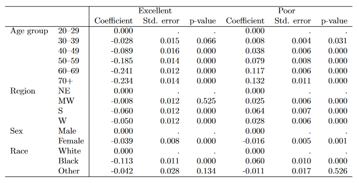

collect style row split, dups(first) // ajoute le label de la variable à gauche comme nom de variable
collect style column, dups(center) // permet de ne pas multiplier le nombre de cellule sur la première ligne
collect style cell result[_r_b _r_se _r_p], nformat(%8.3f) // décimales des valeurs (ici idem)
collect style cell border_block, border(right, pattern(nil)) // bête copier-coller, je n'ai pas testé avec/sans
collect layout (colname) (cmdset#result) // Cette ligne semble obligatoire même si on ne définit pas de style
collect save multimod , replace // sauvegarde dans repertoire temporaire du style appelé ici multimod (format .stjson)Intro - Collect
La suite collect introduite avec le version 17 va t-elle remplacer outreg2 et autres commandes de mise en forme et d’exportation de tableaux…. cela se pourrait bien.
08-09-2022: Merci à Marion pour m’avoir donné l’idée de me pencher rapidement sur cette suite.
Pas encore un tutoriel, dès éléments sont encore obscurs, mais avec quelques copier-coller issus des fichiers d’aide je présente juste deux exemples avec des régressions.
Principe de la suite collect:
- Il s’agit d’un ensemble de commandes pour paramétrer le style des tableaux que l’on souhaite exporter dans des formats comme .doc, .xls, .tex, .html ou .md
- Un style peut être enregistré et utilisé à plusieurs reprises.
- Un style enregistré peut être modifié pour un tableau spécifique.
A partir de la base nanhes21:
- Exemple1: Deux modèles avec spécifications différentes. Il s’agit d’une simple OLS qui mesure la pression artérielle
- Exemple2: AME après un modèle multinomial avec les outcomes en colonne. Pour des raisons de place, je n’ai gardé que deux des quatres outcomes dans l’output. J’utilise une multinomiale même s’il s’agit d’une variable ordinale; j’ai seulement pris de que j’avais sous la main pour l’exemple.
- Dans les tableaux les informations reportées sont les effets marginaux (_r_b), les erreurs type (_r_se) et les p-values (_r_p). D’autres sont disponibles commes les bornes des intervalles de confiances.
Définition d’un style pour une suite de tableaux
Rappel: un tuto plus complet viendra ultérieurement (s’il y a une demande)
Exemples
Ouverture de la base
use https://www.stata-press.com/data/r17/nhanes2l, clearOls
Warning
Lorsqu’on génère un tableau avec collect avec un même style il me semble préférable d’exécuter systématiquement:
collect clear
collect use nom_style, replaceEstimation du modèle avec collect
quietly: collect _r_b _r_se _r_p: regress bpsystol i.agegrp i.region
quietly: collect _r_b _r_se _r_p: regress bpsystol i.agegrp i.region i.sexModification du style pour ajouter le nom des modèles
collect label values cmdset 1 "Modèle 1" 2 "Modèle 2" On peut également ajouter un titre, modifier les labels des variables, je pense aussi les libellées des colonnes pour les indicateurs (par exemple AME au lieu de Coefficient).
Prévisualisation du tableau
collect preview
/*
------------------------------------------------------------------------------
Modèle 1 Modèle 2
Coefficient Std. error p-value Coefficient Std. error p-value
------------------------------------------------------------------------------
Age group 20–29 0.000 0.000 0.000 0.000
30–39 2.891 0.664 0.000 2.917 0.661 0.000
40–49 9.580 0.716 0.000 9.584 0.713 0.000
50–59 18.324 0.713 0.000 18.384 0.710 0.000
60–69 24.184 0.574 0.000 24.193 0.571 0.000
70+ 30.851 0.780 0.000 30.958 0.777 0.000
Region NE 0.000 0.000 0.000 0.000
MW -0.023 0.595 0.969 0.033 0.592 0.956
S -0.303 0.591 0.608 -0.227 0.588 0.699
W -0.777 0.601 0.196 -0.745 0.599 0.213
Sex Male 0.000 0.000
Female -4.015 0.402 0.000
Intercept 117.632 0.589 0.000 119.672 0.621 0.000
------------------------------------------------------------------------------
*/ Remarque: on peut supprimer les baselines, mais je n’ai pas trouvé comment mettre par exemple ref pour la contrainte à 0.
Exportations
J’ai vu large pour l’exemple
collect export ex1, as(docx) replace
collect export ex1, as(xls) replace
collect export ex1, as(tex) replace
collect export ex1, as(html) replace
collect export ex1, as(markdown) replaceEnsemble du programme (sauf la création du style multimod et les exportations)
collect clear
collect use multimod
quietly: collect _r_b _r_se _r_p: regress bpsystol i.agegrp i.region
quietly: collect _r_b _r_se _r_p: regress bpsystol i.agegrp i.region i.sex
collect label values cmdset 1 "Modèle 1" 2 "Modèle 2"
collect previewVisualisation des exportations


- Le tableau a été compilé avec
overleaf(https://fr.overleaf.com), éditeur Latex en ligne. - le fichier tex1.tex généré avec
collect exportdonne le tableau brut balisé. Le fichier peut être appelé t inséré dans un document Latex avec\estauto{nom_fichier.tex}
Fichier ex1.tex
\documentclass{article}
\usepackage{multirow}
\usepackage{amsmath}
\usepackage{ulem}
\usepackage[table]{xcolor}
\begin{document}
\begin{table}[!h]
\centering
\begin{tabular}{llllllll}
\cline{1-8}
\multicolumn{1}{c}{} &
\multicolumn{1}{c}{} &
\multicolumn{3}{c}{Modèle 1} &
\multicolumn{3}{c}{Modèle 2} \\
\multicolumn{1}{c}{} &
\multicolumn{1}{c}{} &
\multicolumn{1}{r}{Coefficient} &
\multicolumn{1}{r}{Std. error} &
\multicolumn{1}{r}{p-value} &
\multicolumn{1}{r}{Coefficient} &
\multicolumn{1}{r}{Std. error} &
\multicolumn{1}{r}{p-value} \\
\cline{1-8}
\multicolumn{1}{l}{Age group} &
\multicolumn{1}{l}{20–29} &
\multicolumn{1}{r}{0.000} &
\multicolumn{1}{r}{0.000} &
\multicolumn{1}{r}{} &
\multicolumn{1}{r}{0.000} &
\multicolumn{1}{r}{0.000} &
\multicolumn{1}{r}{} \\
\multicolumn{1}{l}{} &
\multicolumn{1}{l}{30–39} &
\multicolumn{1}{r}{2.891} &
\multicolumn{1}{r}{0.664} &
\multicolumn{1}{r}{0.000} &
\multicolumn{1}{r}{2.917} &
\multicolumn{1}{r}{0.661} &
\multicolumn{1}{r}{0.000} \\
\multicolumn{1}{l}{} &
\multicolumn{1}{l}{40–49} &
\multicolumn{1}{r}{9.580} &
\multicolumn{1}{r}{0.716} &
\multicolumn{1}{r}{0.000} &
\multicolumn{1}{r}{9.584} &
\multicolumn{1}{r}{0.713} &
\multicolumn{1}{r}{0.000} \\
\multicolumn{1}{l}{} &
\multicolumn{1}{l}{50–59} &
\multicolumn{1}{r}{18.324} &
\multicolumn{1}{r}{0.713} &
\multicolumn{1}{r}{0.000} &
\multicolumn{1}{r}{18.384} &
\multicolumn{1}{r}{0.710} &
\multicolumn{1}{r}{0.000} \\
\multicolumn{1}{l}{} &
\multicolumn{1}{l}{60–69} &
\multicolumn{1}{r}{24.184} &
\multicolumn{1}{r}{0.574} &
\multicolumn{1}{r}{0.000} &
\multicolumn{1}{r}{24.193} &
\multicolumn{1}{r}{0.571} &
\multicolumn{1}{r}{0.000} \\
\multicolumn{1}{l}{} &
\multicolumn{1}{l}{70+} &
\multicolumn{1}{r}{30.851} &
\multicolumn{1}{r}{0.780} &
\multicolumn{1}{r}{0.000} &
\multicolumn{1}{r}{30.958} &
\multicolumn{1}{r}{0.777} &
\multicolumn{1}{r}{0.000} \\
\multicolumn{1}{l}{Region} &
\multicolumn{1}{l}{NE} &
\multicolumn{1}{r}{0.000} &
\multicolumn{1}{r}{0.000} &
\multicolumn{1}{r}{} &
\multicolumn{1}{r}{0.000} &
\multicolumn{1}{r}{0.000} &
\multicolumn{1}{r}{} \\
\multicolumn{1}{l}{} &
\multicolumn{1}{l}{MW} &
\multicolumn{1}{r}{-0.023} &
\multicolumn{1}{r}{0.595} &
\multicolumn{1}{r}{0.969} &
\multicolumn{1}{r}{0.033} &
\multicolumn{1}{r}{0.592} &
\multicolumn{1}{r}{0.956} \\
\multicolumn{1}{l}{} &
\multicolumn{1}{l}{S} &
\multicolumn{1}{r}{-0.303} &
\multicolumn{1}{r}{0.591} &
\multicolumn{1}{r}{0.608} &
\multicolumn{1}{r}{-0.227} &
\multicolumn{1}{r}{0.588} &
\multicolumn{1}{r}{0.699} \\
\multicolumn{1}{l}{} &
\multicolumn{1}{l}{W} &
\multicolumn{1}{r}{-0.777} &
\multicolumn{1}{r}{0.601} &
\multicolumn{1}{r}{0.196} &
\multicolumn{1}{r}{-0.745} &
\multicolumn{1}{r}{0.599} &
\multicolumn{1}{r}{0.213} \\
\multicolumn{1}{l}{Sex} &
\multicolumn{1}{l}{Male} &
\multicolumn{1}{r}{} &
\multicolumn{1}{r}{} &
\multicolumn{1}{r}{} &
\multicolumn{1}{r}{0.000} &
\multicolumn{1}{r}{0.000} &
\multicolumn{1}{r}{} \\
\multicolumn{1}{l}{} &
\multicolumn{1}{l}{Female} &
\multicolumn{1}{r}{} &
\multicolumn{1}{r}{} &
\multicolumn{1}{r}{} &
\multicolumn{1}{r}{-4.015} &
\multicolumn{1}{r}{0.402} &
\multicolumn{1}{r}{0.000} \\
\multicolumn{2}{l}{Intercept} &
\multicolumn{1}{r}{117.632} &
\multicolumn{1}{r}{0.589} &
\multicolumn{1}{r}{0.000} &
\multicolumn{1}{r}{119.672} &
\multicolumn{1}{r}{0.621} &
\multicolumn{1}{r}{0.000} \\
\cline{1-8}
\end{tabular}
\end{table}
\end{document}Juste une petite remarque sur les notes de bas de tableau. collect gère également leur présence et leur mise en forme, mais le code généré semble systématiquement les aligner au centre. A creuser, sinon il faut modifier le code Latex pour les aligner à gauche. Par exemple:
\multicolumn{3}{l}{\footnotesize Note 1: blablabla}\\
\multicolumn{3}{l}{\footnotesize Note 2: blablabla}\\
\end{tabular}
\end{table}| Modèle 1 | Modèle 2 | ||||||
|---|---|---|---|---|---|---|---|
| Coefficient | Std. error | p-value | Coefficient | Std. error | p-value | ||
| Age group | 20–29 | Ref | Ref | Ref | Ref | ||
| 30–39 | 2.891 | 0.664 | 0.000 | 2.917 | 0.661 | 0.000 | |
| 40–49 | 9.580 | 0.716 | 0.000 | 9.584 | 0.713 | 0.000 | |
| 50–59 | 18.324 | 0.713 | 0.000 | 18.384 | 0.710 | 0.000 | |
| 60–69 | 24.184 | 0.574 | 0.000 | 24.193 | 0.571 | 0.000 | |
| 70+ | 30.851 | 0.780 | 0.000 | 30.958 | 0.777 | 0.000 | |
| Region | NE | Ref | Ref | Ref | Ref | ||
| MW | -0.023 | 0.595 | 0.969 | 0.033 | 0.592 | 0.956 | |
| S | -0.303 | 0.591 | 0.608 | -0.227 | 0.588 | 0.699 | |
| W | -0.777 | 0.601 | 0.196 | -0.745 | 0.599 | 0.213 | |
| Sex | Male | Ref | Ref | ||||
| Female | -4.015 | 0.402 | 0.000 | ||||
| Intercept | 117.632 | 0.589 | 0.000 | 119.672 | 0.621 | 0.000 |
Le tableau est un peu complexe, pour et les 3 premières lignes doivent être modifiée en md (je n’ai pas trouvé mieux pour l’instant):
md du fichier ex1.md
| | | Modèle 1 | | | Modèle 2 | | |
| | | Coefficient | Std. error | p-value | Coefficient | Std. error | p-value |
|-----------|--------|-------------|------------|---------|-------------|------------|---------|
| Age group | 20–29 | 0.000 | 0.000 | | 0.000 | 0.000 | |
| | 30–39 | 2.891 | 0.664 | 0.000 | 2.917 | 0.661 | 0.000 |
| | 40–49 | 9.580 | 0.716 | 0.000 | 9.584 | 0.713 | 0.000 |
| | 50–59 | 18.324 | 0.713 | 0.000 | 18.384 | 0.710 | 0.000 |
| | 60–69 | 24.184 | 0.574 | 0.000 | 24.193 | 0.571 | 0.000 |
| | 70+ | 30.851 | 0.780 | 0.000 | 30.958 | 0.777 | 0.000 |
| Region | NE | 0.000 | 0.000 | | 0.000 | 0.000 | |
| | MW | -0.023 | 0.595 | 0.969 | 0.033 | 0.592 | 0.956 |
| | S | -0.303 | 0.591 | 0.608 | -0.227 | 0.588 | 0.699 |
| | W | -0.777 | 0.601 | 0.196 | -0.745 | 0.599 | 0.213 |
| Sex | Male | | | | 0.000 | 0.000 | |
| | Female | | | | -4.015 | 0.402 | 0.000 |
| Intercept | | 117.632 | 0.589 | 0.000 | 119.672 | 0.621 | 0.000 |md modifié (ligne 1 à 3
| | | Modèle 1 | | | Modèle 2 | | |
|-----------|--------|-------------|------------|---------|-------------|------------|---------|
| | | Coefficient | Std. error | p-value | Coefficient | Std. error | p-value |
| Age group | 20–29 | 0.000 | 0.000 | | 0.000 | 0.000 | |
| | 30–39 | 2.891 | 0.664 | 0.000 | 2.917 | 0.661 | 0.000 |
| | 40–49 | 9.580 | 0.716 | 0.000 | 9.584 | 0.713 | 0.000 |
| | 50–59 | 18.324 | 0.713 | 0.000 | 18.384 | 0.710 | 0.000 |
| | 60–69 | 24.184 | 0.574 | 0.000 | 24.193 | 0.571 | 0.000 |
| | 70+ | 30.851 | 0.780 | 0.000 | 30.958 | 0.777 | 0.000 |
| Region | NE | 0.000 | 0.000 | | 0.000 | 0.000 | |
| | MW | -0.023 | 0.595 | 0.969 | 0.033 | 0.592 | 0.956 |
| | S | -0.303 | 0.591 | 0.608 | -0.227 | 0.588 | 0.699 |
| | W | -0.777 | 0.601 | 0.196 | -0.745 | 0.599 | 0.213 |
| Sex | Male | | | | 0.000 | 0.000 | |
| | Female | | | | -4.015 | 0.402 | 0.000 |
| Intercept | | 117.632 | 0.589 | 0.000 | 119.672 | 0.621 | 0.000 |Pour la sortie, j’ai fait également quelques modifs au niveau du texte et changé les valeurs des baselines de 0.00 à Ref
Margins avec mlogit
- Le programme est très simple, et au final on arrive à produire rapidement un output très satisfaisant avec les résulats des différentes modalités en colonne.
- Je n’ai pas reproduit la fin du programme avec
collect export.
Rappel: j’ai seulement reporté les AME pour seulement deux catégories excellent et poor
collect clear
collect use multimod
qui mlogit hlthstat i.agegrp i.region i.sex i.race
qui: collect _r_b _r_se _r_p: margins, dydx(*) predict(outcome(Excellent))
qui: collect _r_b _r_se _r_p: margins, dydx(*) predict(outcome(Poor))
collect label values cmdset 1 "Excellent" 2 "Poor"
collect preview
/*
------------------------------------------------------------------------------
Excellent Poor
Coefficient Std. error p-value Coefficient Std. error p-value
------------------------------------------------------------------------------
Age group 20–29 0.000 . . 0.000 . .
30–39 -0.028 0.015 0.066 0.008 0.004 0.031
40–49 -0.089 0.016 0.000 0.038 0.006 0.000
50–59 -0.185 0.014 0.000 0.079 0.008 0.000
60–69 -0.241 0.012 0.000 0.117 0.006 0.000
70+ -0.234 0.014 0.000 0.132 0.011 0.000
Region NE 0.000 . . 0.000 . .
MW -0.008 0.012 0.525 0.025 0.006 0.000
S -0.060 0.012 0.000 0.064 0.007 0.000
W -0.050 0.012 0.000 0.028 0.006 0.000
Sex Male 0.000 . . 0.000 . .
Female -0.039 0.008 0.000 -0.016 0.005 0.001
Race White 0.000 . . 0.000 . .
Black -0.113 0.011 0.000 0.060 0.010 0.000
Other -0.042 0.028 0.134 -0.011 0.017 0.526
------------------------------------------------------------------------------
*/ Visualisation des exportations



| Excellent | Poor | ||||||
|---|---|---|---|---|---|---|---|
| Coefficient | Std. error | p-value | Coefficient | Std. error | p-value | ||
| Age group | 20–29 | Ref | . | . | Ref | . | . |
| 30–39 | -0.028 | 0.015 | 0.066 | 0.008 | 0.004 | 0.031 | |
| 40–49 | -0.089 | 0.016 | 0.000 | 0.038 | 0.006 | 0.000 | |
| 50–59 | -0.185 | 0.014 | 0.000 | 0.079 | 0.008 | 0.000 | |
| 60–69 | -0.241 | 0.012 | 0.000 | 0.117 | 0.006 | 0.000 | |
| 70+ | -0.234 | 0.014 | 0.000 | 0.132 | 0.011 | 0.000 | |
| Region | NE | Ref | . | . | Ref | . | . |
| MW | -0.008 | 0.012 | 0.525 | 0.025 | 0.006 | 0.000 | |
| S | -0.060 | 0.012 | 0.000 | 0.064 | 0.007 | 0.000 | |
| W | -0.050 | 0.012 | 0.000 | 0.028 | 0.006 | 0.000 | |
| Sex | Male | Ref | . | . | Ref | . | . |
| Female | -0.039 | 0.008 | 0.000 | -0.016 | 0.005 | 0.001 | |
| Race | White | 0.000 | . | . | 0.000 | . | . |
| Black | -0.113 | 0.011 | 0.000 | 0.060 | 0.010 | 0.000 | |
| Other | -0.042 | 0.028 | 0.134 | -0.011 | 0.017 | 0.526 |
Sans style enregistré
Il est bien évidemment de programmer et d’utiliser les styles à la volée. A minima, il semblerait que pour les résultats de régression la ligne collect layout (colname) (cmdset#result) soit obligatoire.
Pour un simple modèle (exemple1 Ols), sans style.
collect clear
quietly: collect _r_b _r_se _r_p: regress bpsystol i.agegrp i.region i.sex
collect preview
* Your layout specification does not identify any items.
collect clear
collect layout (colname) (cmdset#result)
quietly: collect _r_b _r_se _r_p: regress bpsystol i.agegrp i.region i.sex
collect preview
/*
------------------------------------------
| 1 1 1
| Coefficient Std. error p-value
----------+-------------------------------
20–29 | 0 0
30–39 | 2.917042 .6613269 0.000
40–49 | 9.584328 .7129385 0.000
50–59 | 18.38351 .7100856 0.000
60–69 | 24.1932 .5711481 0.000
70+ | 30.95843 .7768639 0.000
NE | 0 0
MW | .0329983 .5917749 0.956
S | -.2269237 .5877579 0.699
W | -.7447052 .5985115 0.213
Male | 0 0
Female | -4.01548 .4021621 0.000
Intercept | 119.6719 .6205858 0.000
------------------------------------------
*/Au lieu de sélectionner des items comme _r_b _r_se _r_se, on peut directement tous ceux qui sont disponibles avec collect get. Pas forcément conseillé avec les exemples car chaque regression enregistre 10 information (bornes des IC, degré de liberté, statistique t pour l’Ols, sa valeur absolue…)
Pour info la ligne avec collect get est: collect get: regress bpsystol i.agegrp i.region i.sex
Le builder
Stata a installé un builder intéractif pour mettre en forme. Je ne suis pas du tout à l’aise avec ce genre d’outil, pour ne pas dire complètement nul.
help Tables_Builder
Tutoriels youtube (Chuck Huber):
- Régression https://www.youtube.com/watch?v=TFFdTIHHtUg
- A partir de la commande
table(attention la syntaxe à été modifiée depuis la version 17…Merci Cris)